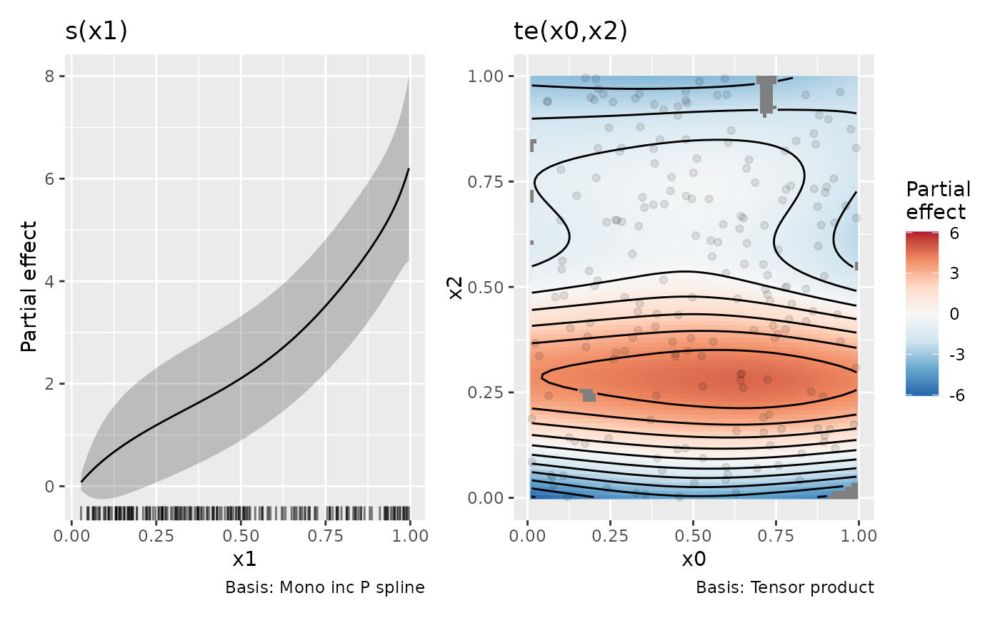

Enhance post-processing of mvgam models using gratia functionality
Source:R/gratia_methods.R
gratia_mvgam_enhancements.RdThese evaluation and plotting functions exist to allow some popular gratia
methods to work with mvgam or jsdgam models
Usage
drawDotmvgam(
object,
trend_effects = FALSE,
data = NULL,
select = NULL,
parametric = FALSE,
terms = NULL,
residuals = FALSE,
scales = c("free", "fixed"),
ci_level = 0.95,
n = 100,
n_3d = 16,
n_4d = 4,
unconditional = FALSE,
overall_uncertainty = TRUE,
constant = NULL,
fun = NULL,
dist = 0.1,
rug = TRUE,
contour = TRUE,
grouped_by = FALSE,
ci_alpha = 0.2,
ci_col = "black",
smooth_col = "black",
resid_col = "steelblue3",
contour_col = "black",
n_contour = NULL,
partial_match = FALSE,
discrete_colour = NULL,
discrete_fill = NULL,
continuous_colour = NULL,
continuous_fill = NULL,
position = "identity",
angle = NULL,
ncol = NULL,
nrow = NULL,
guides = "keep",
widths = NULL,
heights = NULL,
crs = NULL,
default_crs = NULL,
lims_method = "cross",
wrap = TRUE,
envir = environment(formula(object)),
...
)
eval_smoothDothilbertDotsmooth(
smooth,
model,
n = 100,
n_3d = NULL,
n_4d = NULL,
data = NULL,
unconditional = FALSE,
overall_uncertainty = TRUE,
dist = NULL,
...
)
eval_smoothDotmodDotsmooth(
smooth,
model,
n = 100,
n_3d = NULL,
n_4d = NULL,
data = NULL,
unconditional = FALSE,
overall_uncertainty = TRUE,
dist = NULL,
...
)
eval_smoothDotmoiDotsmooth(
smooth,
model,
n = 100,
n_3d = NULL,
n_4d = NULL,
data = NULL,
unconditional = FALSE,
overall_uncertainty = TRUE,
dist = NULL,
...
)Arguments
- object
a fitted mvgam, the result of a call to
mvgam()- trend_effects
logical specifying whether smooth terms from the
trend_formulashould be drawn. IfFALSE, only terms from the observation formula are drawn. IfTRUE, only terms from thetrend_formulaare drawn- data
a data frame of covariate values at which to evaluate the model's smooth functions
- select
character, logical, or numeric; which smooths to plot. If
NULL, the default, then all model smooths are drawn. Characterselectmatches the labels for smooths as shown for example in the output fromsummary(object). Logicalselectoperates as per numericselectin the order that smooths are stored- parametric
logical; plot parametric terms also? Note that
selectis used for selecting which smooths to plot. Thetermsargument is used to select which parametric effects are plotted. The default, as withmgcv::plot.gam(), is to not draw parametric effects- terms
character; which model parametric terms should be drawn? The Default of
NULLwill plot all parametric terms that can be drawn.- residuals
currently ignored for
mvgammodels- scales
character; should all univariate smooths be plotted with the same y-axis scale? If
scales = "free", the default, each univariate smooth has its own y-axis scale. Ifscales = "fixed", a common y axis scale is used for all univariate smooths.Currently does not affect the y-axis scale of plots of the parametric terms
- ci_level
numeric between 0 and 1; the coverage of credible interval.
- n
numeric; the number of points over the range of the covariate at which to evaluate the smooth
- n_3d, n_4d
numeric; the number of points over the range of last covariate in a 3D or 4D smooth. The default is
NULLwhich achieves the standard behaviour of usingnpoints over the range of all covariate, resulting inn^devaluation points, wheredis the dimension of the smooth. Ford > 2this can result in very many evaluation points and slow performance. For smooths ofd > 4, the value ofn_4dwill be used for all dimensions> 4, unless this isNULL, in which case the default behaviour (usingnfor all dimensions) will be observed- unconditional
ignored for
mvgammodels as all appropriate uncertainties are already included in the posterior estimates- overall_uncertainty
ignored for
mvgammodels as all appropriate uncertainties are already included in the posterior estimates- constant
numeric; a constant to add to the estimated values of the smooth.
constant, if supplied, will be added to the estimated value before the confidence band is computed- fun
function; a function that will be applied to the estimated values and confidence interval before plotting. Can be a function or the name of a function. Function
funwill be applied after adding anyconstant, if provided- dist
numeric; if greater than 0, this is used to determine when a location is too far from data to be plotted when plotting 2-D smooths. The data are scaled into the unit square before deciding what to exclude, and
distis a distance within the unit square. Seemgcv::exclude.too.far()for further details- rug
logical; draw a rug plot at the bottom of each plot for 1-D smooths or plot locations of data for higher dimensions.
- contour
logical; should contours be draw on the plot using
ggplot2::geom_contour()- grouped_by
logical; should factor by smooths be drawn as one panel per level of the factor (
FALSE, the default), or should the individual smooths be combined into a single panel containing all levels (TRUE)?- ci_alpha
numeric; alpha transparency for confidence or simultaneous interval
- ci_col
colour specification for the confidence/credible intervals band. Affects the fill of the interval
- smooth_col
colour specification for the smooth line
- resid_col
colour specification for residual points. Ignored
- contour_col
colour specification for contour lines
- n_contour
numeric; the number of contour bins. Will result in
n_contour - 1contour lines being drawn. Seeggplot2::geom_contour()- partial_match
logical; should smooths be selected by partial matches with
select? IfTRUE,selectcan only be a single string to match against- discrete_colour
a suitable colour scale to be used when plotting discrete variables
- discrete_fill
a suitable fill scale to be used when plotting discrete variables.
- continuous_colour
a suitable colour scale to be used when plotting continuous variables
- continuous_fill
a suitable fill scale to be used when plotting continuous variables
- position
Position adjustment, either as a string, or the result of a call to a position adjustment function
- angle
numeric; the angle at which the x axis tick labels are to be drawn passed to the
angleargument ofggplot2::guide_axis()- ncol, nrow
numeric; the numbers of rows and columns over which to spread the plots
- guides
character; one of
"keep"(the default),"collect", or"auto". Passed topatchwork::plot_layout()- widths, heights
The relative widths and heights of each column and row in the grid. Will get repeated to match the dimensions of the grid. If there is more than 1 plot and
widths = NULL, the value ofwidthswill be set internally towidths = 1to accommodate plots of smooths that use a fixed aspect ratio.=- crs
the coordinate reference system (CRS) to use for the plot. All data will be projected into this CRS. See
ggplot2::coord_sf()for details- default_crs
the coordinate reference system (CRS) to use for the non-sf layers in the plot. If left at the default
NULL, the CRS used is 4326 (WGS84), which is appropriate for spline-on-the-sphere smooths, which are parameterized in terms of latitude and longitude as coordinates. Seeggplot2::coord_sf()for more details- lims_method
character; affects how the axis limits are determined. See
ggplot2::coord_sf(). Be careful; in testing of some examples, changing this to"orthogonal"for example with the chlorophyll-a example from Simon Wood's GAM book quickly used up all the RAM in my test system and the OS killed R. This could be incorrect usage on my part; right now the grid of points at which SOS smooths are evaluated (if not supplied by the user) can produce invalid coordinates for the corners of tiles as the grid is generated for tile centres without respect to the spacing of those tiles- wrap
logical; wrap plots as a patchwork? If
FALSE, a list of ggplot objects is returned, 1 per term plotted- envir
an environment to look up the data within
- ...
additional arguments passed to other methods
- smooth
a smooth object of class
"gp.smooth"(returned from a model using either thedynamic()function or thegp()function) or of class"moi.smooth"or"mod.smooth"(returned from a model using the 'moi' or 'mod' basis)- model
a fitted
mgcvmodel of clasgamorbam
Details
These methods allow mvgam models to be Enhanced if users have the gratia
package installed, making available the popular draw() function to plot partial effects
of mvgam smooth functions using ggplot2::ggplot() utilities
Examples
# \donttest{
# Fit a simple GAM and draw partial effects of smooths using 'gratia'
set.seed(0)
dat <- mgcv::gamSim(
eg = 1,
n = 200,
scale = 2
)
#> Gu & Wahba 4 term additive model
mod <- mvgam(
formula = y ~ s(x1, bs = 'moi') +
te(x0, x2),
data = dat,
family = gaussian(),
chains = 2,
silent = 2
)
if (require("gratia")) {
gratia::draw(mod)
}
#> Loading required package: gratia
#>
#> Attaching package: ‘gratia’
#> The following object is masked from ‘package:mvgam’:
#>
#> add_residuals

# }